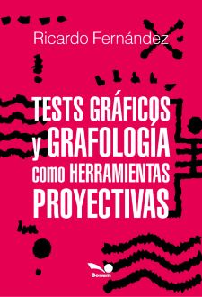

|
 |
Introducción
Las test gráficos y la grafología, comparten el grafismo como material de
estudio.
Cada trazo ejecutado sobre un papel, ésta realizado por una persona que deja
una huella impresa, con gestos característicos, que la hacen diferente de
otras.
El cerebro es el que produce esos trazos. Para poder escribir, dibujar,
pintar, es necesario de una apoyatura biológica que la produzca.
Los dos hemisferios, los cuatro lóbulos y otras estructuras como tálamo,
hipotálamo, cerebelo, sistema límbico, médula espinal entre otros, están
coordinando información para producir cada gesto, que queda reflejado en el
papel.
La forma de pensar influye para que se liberen neuroquímicos, que generan
emociones, a su vez estos actúan sobre el cuerpo, produciendo sensaciones
físicas acorde con lo que se siente, lo que puede generar síntomas, que
intensifica lo que se piensa ( negativo o positivo) y retroalimenta el
circuito innumerable cantidad de veces.
El grafismo resultante, va a ser una señal que queda impresa, que ésta
denotando lo que le pasa a esa persona, tanto a nivel consciente como
inconsciente. El sistema nervioso del escribiente o dibujante, queda
externalizado en esas líneas o dibujos.
Los dibujos y la escritura comparten muchos aspectos de análisis, para
comprender lo que dice ese material.
En este libro vamos a trabajar la relación existente entre los Test
gráficos y grafología , los parámetros comunes que hacen a los
grafismos.
Se realizará una mirada de acuerdo a los ocho géneros grafológicos y se los
llevará a cada uno de los test trabajados, para una lectura de los mismos
desde lo que expresan los grafismos. Luego se hará una interpretación desde
lo que puede aportar el simbolismo psicológico.
Trabajaremos sobre los Test de:
Wartegg: sus fundamentos, administración, géneros grafológicos,
simbolismo de los 16 cuadros que aporto el maestro Pedro Dalfonso.
Bender: Fundamentos, leyes de la Gestalt, administración, evaluación
de acuerdo los géneros gráficos.
Grafología emocional: teoría y técnica creada por Curt Honroth, para
aplicarla en los test gráficos
Test Desiderativo gráfico: fundamentos, administración, géneros
grafológicos, simbolismo de las respuestas
Frustraciones de Rosenzweig (versión modificada): fundamentos,
administración, géneros grafológicos, simbolismo de las respuestas
Frases incompletas (adaptado a grafólogos): fundamentos, administración,
géneros grafológicos, simbolismo de los grupos de respuesta.
|